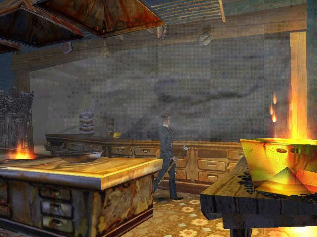
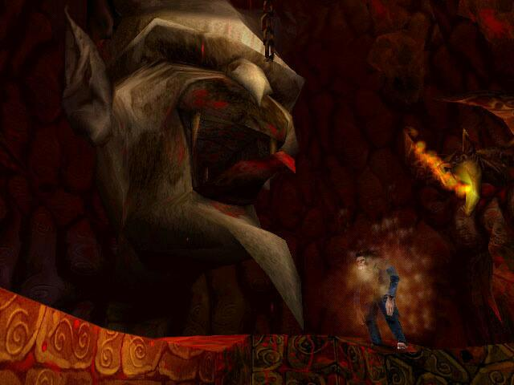
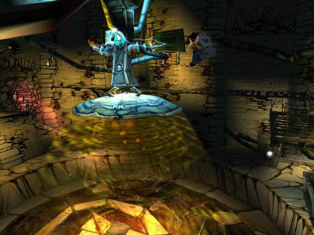

А началось все с того, что я опоздал к раздаче слонов. Всех хороших слонов уже разобрали, остались только больные и неухоженные. “Ты любишь квесты? Только он с элементами файтинга.” – спросили они. Решив, что мне сейчас дадут нечто вроде “Штырлица” и иже с ним, я согласился. Посижу, думаю, пару часиков, накатаю ироничную ревьюху и слеплю по-быстрому гайд. Лады! Взял я коробочку от “1С” с жутковатым мужиком на обложке и пошел себе, ни о чем таком не думая, домой. Так в моих цепких лапах оказались “Странные приключения доктора Джекила и мистера Хайда”, сокращенно “Джекил и Хайд”, или еще более сокращенно и соответствующе действительности: “ДжиХад”.
Здравствуй, Красная Шапочка.
О книжном докторе Джекиле я помнил только то, что он, наглотавшись какой-то гадости, превращался в неприятную во всех отношениях личность – мистера Хайда. И в этом облике чинил гадости и беспредел мирным англичанам, за что и поплатился в конце концов.

Однако, храбрые разработчики пошли дальше. В игре описываются события, последующие всем известной истории. Оказывается, доктор Джекил был женат и впоследствии овдовел, оставшись с маленькой дочкой на руках. Эту-то самую дочку и спер у него… Кто бы вы думали? Подскажу – это самый известный в мире венгр. Правильно, граф Дракула. Бедолага кровопивец снова приплелся в Лондон, чтобы подпрячь нашего доктора, а вернее его альтерэго – Хайда на поиски какой то книги, стыренной у него тамплиерами в незапамятные времена. Наверное Дракула подрабатывал в библиотеке и злостные читатели тамплиеры взяли почитать эту самую книгу и не вернули… Обычное дело! Правда, с хорошим Джекилом, Дракула работать не хочет, а потому шантажом, заставляет доктора снова превратиться в агрессивного Хайда, что тот и выполняет.
Итак – сюжет откровенно неплох. Интересная первопричина, любопытные требования врагов, симпатичные цели и средства их достижения. Джекил превращается в Хайда и обратно почти по желанию игрока. Персонажей вроде как двое в одном лице, они разные и могут выполнять разные действия – типичное явления для квестов, красиво исполненное и реализованное в соответствии с изысками сценария.
До свидания, Красная Шапочка.
Волшебная сказка кончилась. Началась суровая действительность.
Пять элементов заставки (четыре из которых – это визитные карточки разработчика и локализаторов) довольно милы. Слегка насторожило отсутствие мышки в интерфейсе главного меню. Вступительный мультик тоже не потряс воображение. Кукольные персонажи, впрочем, не вызывали и отрицательных эмоций. Сама же игра несколько удивила.

Прослушав вступительный диалог Джекила со страшной, как смертный грех, медсестрой псих больницы и не менее жутким санитаром, мы оказываемся в кабинете доктора и игра начинается… Но не для всех, а только для тех, у кого работает клавиатура. Для тех же, у кого игра не реагирует даже на самые отчаянные удары по кнопкам Ctrl+Alt+Del, наступает перерыв и нервная горячая перезагрузка. Перезагрузка иногда помогает (хотя, судя по отзывам геймеров на форумах, чаще не помогает). Если все-таки удалось активировать господина Джекила, начинается самое интересное.
Сразу понимаешь, что тебя нагло обманули. Вид от третьего лица – аля Лара Крофт, но… Стрейфа нет, заднего хода нет, клавиши движения НЕ ПЕРЕНАЗНАЧАЮТСЯ! Тут каждому становится понятно, что перед нами не шутер и не обещанный экшен, а самый настоящий квест – там сильно шустрое управление ни к чему. Наличие инвентаря этот факт подтверждает. Ура! Квест – это хорошо. По быстрому запихав в карманы все, что удалось найти в кабинете, доктор выслушал долгий непрерываемый монолог жуткой медсестры с приятным голосом и поспешил наружу.
А снаружи в мутноватом коридоре доктор немедленно огреб в табло от местной взбунтовавшейся психопатки. Кое-как с непривычки укокошив даму тростью, я решил, что для квеста с элементами… это крутовато. П-образный коридор, утыканный дверями навел на мысль о разветвленном сценарии, однако двери не пожелали открываться, кроме единственно возможной. То есть, заблудиться нельзя даже если очень постараться. И понеслась. Доктор бил тростью, прыгал, как кузнечик, подтягивался уворачивался, прятался за шкафами и лазил по стенам. Призрачный силуэт квеста таял в утренней дымке.
Вдруг неожиданно у меня возникло впечатление, что все это я где то давным давно уже видел. И вспомнил! Принц! Принц Персии – только в трехмерном варианте. На протяжении 80% игрового времени игроку приходится лазить и прыгать, срываясь и падая, колотить тростью и руками, пить бутылочки, и прыгать, прыгать, прыгать... Причем “сэв/лод” находится на том же уровне, что и у Принца. Даже ручное сохранение перед ответственным прыжком выбрасывает при загрузке в начало уровня. Упорно играя дальше я понял, что квестом и не пахнет. Например в опиумокурильне: можно отдавать китаянке паспорт, а можно и не отдавать, можно находить чертеж за шкафом, а можно и не находить. Зачем думать, напрягаться? Главное прыгнуть с разбегу! Богатая свобода выбора, понимаешь.
Красная Шапочка, я тебя съем!
Если немного подумать, то мозг поражает страшная догадка: те, кто делал “ДжиХад” искренне и горячо не любят людей в целом и плеяду геймеров в частности. Ловко маскируясь под “экшен с элементами квеста”, заманив игрока добротным сценарием, игра оказалась “экшеном с припрыжкой” чистой воды. Аркадный сэвлод, дико бесящий в условиях повышенной тотальной прыго-падучести с различных конструкций неизвестного назначения. Жутко неудобное управление. Непрерываемые диалоги с персонажами, некоторые из которых в случае перезагрузок приходится выслушивать помногу раз. Дикая камера, регулярно выпускающая персонаж из поля своего зрения. Однообразное и единственное оружие. Ну если доктору Джекилу воспитание не позволяет воспользоваться чужим пистолетом, (может ему тростью сподручнее), то у мистера Хайда не должно быть предубеждения против огнестрельного оружия. Тем не менее, завалив несколько гангстеров с револьверами, ни тот ни другой не догадывается прибрать себе ствол. Масса необратимых действий.
Спокойно! Сядьте по местам, я еще не сказал о графике!
Графика! Дамы и господа, перед вами так называемый гротеск. Пикассо отдыхает. Косые окна, кривые двери, изогнутые лестницы, спичечные ножки и ручки, страшные нечеловеческие хари. Нет, возмущаться нельзя, - ведь это так все специально сделано! Стильно! Конечно, такова была задумка, фича такая новомодная, фишка такая крутая. Типа-а-а-а. Чиста-а-а. Масса колоритных персонажей. Колоритных уродцев. Это же гротеск – так положено, а кто будет возмущаться, тот ничего не понимает в высоком искусстве. Я вот понимал “в высоком искусстве” до тех пор, пока не повстречал складских роботов, сделанных из нескольких кубиков, паралепепедов и, не побоюсь этого слова, цилиндров. А когда они начали бить меня длинными прямоугольными палками, приделанными к, наверное, плечам, я тоже перестал понимать “высокое искусство гротеска”.

Если развернуть камеру и посмотреть в лицо доктора Джекила, то вы увидите страшную морду тридцатилетнего дауна, как их рисовали в старых медицинских учебниках: низкий лоб, нижняя челюсть доминирует над прочими чертами лица, надбровные дуги... ужас, одним словом. Мистер Хайд выглядит гораздо симпатичнее! Это не искусство, уважаемые, это лень, и желание срубить бабла при минимальных затратах усилий. Маскировать корявую, темную, мутную дешевую графику под “так и было задумано” - это дурной тон.
Красная Шапочка должна умереть!
У вас много свободного времени? Вам хорошо живется на свете? Вы трудоголик? Вы любите пол часа скакать бесцельно по балкам и балкончикам с тростью в лапах, срываться в самом конце и начинать заново? Ну, тогда это ваша игра. Остальным рекомендую взять в библиотеке и прочесть настоящую историю Джекила и Хайда – получите гораздо больше удовольствия. Ах, да, книги – это скучно… Ну тогда попробуйте, поиграйте в “ДжиХад”, вдруг да понравится…